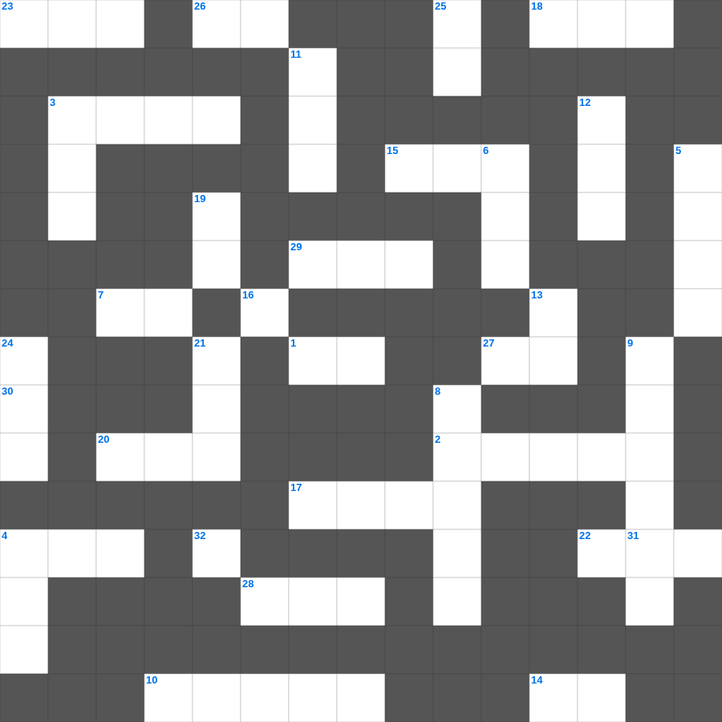

나훔: 니느웨의 멸망
📌 서비스 정의
십자가로세로는 교회 주보와 주일학교에서 사용할 수 있는 성경 기반 가로세로 퍼즐 서비스입니다. 성경 인물, 사건, 핵심 구절을 바탕으로 제작되었습니다. 온라인 풀이 및 인쇄 기능을 제공합니다.
📖 나훔란?
나훔은 잔혹했던 앗수르의 수도 니느웨에 대한 하나님의 심판을 선언하며, 악에 대한 하나님의 공의로운 진노를 보여주는 예언서입니다.
📚 나훔의 주요 사건·주제
니느웨에 대한 심판 선언 · 하나님의 진노와 공의 · 니느웨 멸망에 대한 묘사 · 앗수르의 죄악 고발 · 심판의 확실성 강조
오늘은 나훔의 주요 내용을 담은 나훔 성경 퀴즈 문제를 준비했습니다. 총 35개의 힌트가 있으며, 주일학교 교재나 성경공부 자료로 활용하기 좋습니다. 무료로 즐기는 나훔 가로세로 퍼즐을 지금 바로 풀어보세요!

📝 가로 힌트
1. 성령의 9가지 열매 중 두 번째
2. 에베소 사람들이 숭배한 여신
3. 떡 다섯 개와 물고기 두 마리로 오천 명을 먹이심
4. 예수님의 제자 수
7. 예수님이 우리 죄를 대신해 돌아가심
10. 부활 후 도마에게 보여주신 부위
14. 성경은 하나님의 이것으로 된 것으로
15. 안드레의 형제
17. 죽은 나사로를 향해 하신 명령
18. 이스라엘의 유일한 여성 사사
20. 성경 인물 중 가장 키가 큰 사람은?
22. 메시아의 탄생을 예언한 평화의 선지자
23. 노아의 방주에 탄 사람의 총수
26. 하나님의 나라는 말에 있지 아니하고 오직 이것에 있음이라
27. 예수 그리스도는 어제나 오늘이나 영원토록 이것하시니라
28. 솔로몬 성전의 두 기둥 이름 중 다른 하나
29. 한 해의 첫 열매를 드리는 절기
30. 잃어버린 한 마리 이것을 찾는 목자
32. 야곱이 베개로 삼았던 것
📝 세로 힌트
2. 노아의 방주가 머문 산
3. 맥추절 혹은 칠칠절이라 불리는 신약의 절기
4. 대제사장의 흉패에 박힌 보석 개수
5. 범사에 이것하라
6. 오직 의인은 믿음으로 말미암아 살리라
8. 인류 최초의 동물원 원장은 누구일까요?
9. 웃사가 법궤를 만지다 죽은 사건
11. 나일강이 피로 변한 첫 번째 재앙
12. 야곱이 축복을 받기 위해 팔에 붙인 것
13. 하나님이 세상을 창조하신 기간(일)
16. 공중에 나는 이것(다섯째 날)
19. 요셉이 보디발의 아내 유혹을 물리치고 간 곳
21. 입다의 고향
24. 하나님께 노래로 영광 돌리는 팀
25. 예수님을 판 제자
31. 성령의 9가지 열매 중 첫 번째
📖 함께 읽으면 좋은 성경사전
퍼즐을 풀기 전에 읽으면 힌트가 쉬워지고, 풀고 나서 읽으면 내용을 한 번 더 복습할 수 있습니다.
🧩 이 퍼즐에서 배우는 내용
이 퍼즐은 나훔: 니느웨의 멸망의 핵심 단어와 개념을 자연스럽게 복습할 수 있도록 구성되었습니다. 주일학교 수업이나 개인 성경공부에서 학습 내용을 점검하는 용도로 바로 활용할 수 있습니다.
🧑🏫 교회 교육 자료 활용
이 퍼즐은 주일학교 교재 추천 자료로 활용할 수 있고, 주일학교 주보에 넣기 좋은 분량으로 구성되어 있습니다. 수업용 주일학교 교안에 활동지로 붙이거나, 예배 후 복습용 주일학교 공과교재로 바로 사용할 수 있습니다.
🏷️ 키워드
나훔 성경 퀴즈 문제, 나훔, 십자가로세로, 성경퀴즈, 말씀퀴즈, 가로세로퍼즐, 주일학교 교재 추천, 주일학교 주보, 주일학교 교안, 주일학교 공과교재